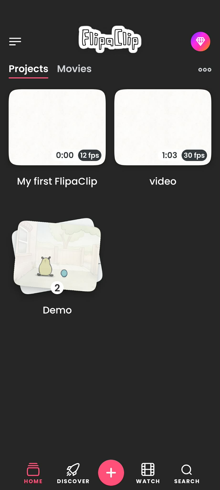
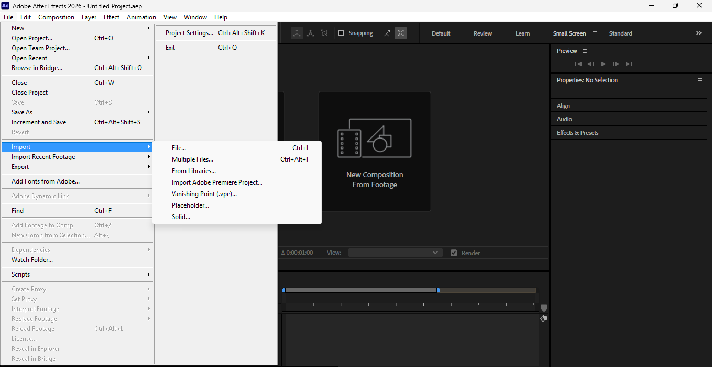

Week 1
Rotoscoping Works
A collection of projects showcasing visual effects compositing and frame-by-frame masking logic. Keep adding weekly outputs to build one complete process archive.
Project Reference Video
Gangsta - Kehlani / Jane Kim Choreography | LOKI DANCE COVER | AETERNA
This reference is used for educational study and movement analysis in rotoscope practice, including timing, masking direction, and compositing flow.
Disclaimer and Credits: All rights to the original video belong to the rightful owner and uploader. Reference source: "Gangsta - Kehlani / Jane Kim Choreography | LOKI DANCE COVER" by AETERNA.
This page does not claim ownership of the original footage, audio, or choreography.
Part 1: FlipaClip (Frame-by-Frame Rotoscoping)
5 steps to create frame-by-frame rotoscope animation

Step 1: Open FlipaClip and create a new project
Open FlipaClip and create a new project to get started with your rotoscoping animation.
Part 2: After Effects (Roto Brush Method)
11 steps to create professional rotoscope with Roto Brush

Step 1: Open After Effects and import your video file
Launch Adobe After Effects and import your video file to begin the rotoscoping process.
Weekly Submission Board (Week 1-12)
Progress documentation and weekly video submissions.
Week 2
Week 3
Week 4
Week 5
Week 6
Week 7
Week 8
Week 9
Week 10
Week 11
Week 12